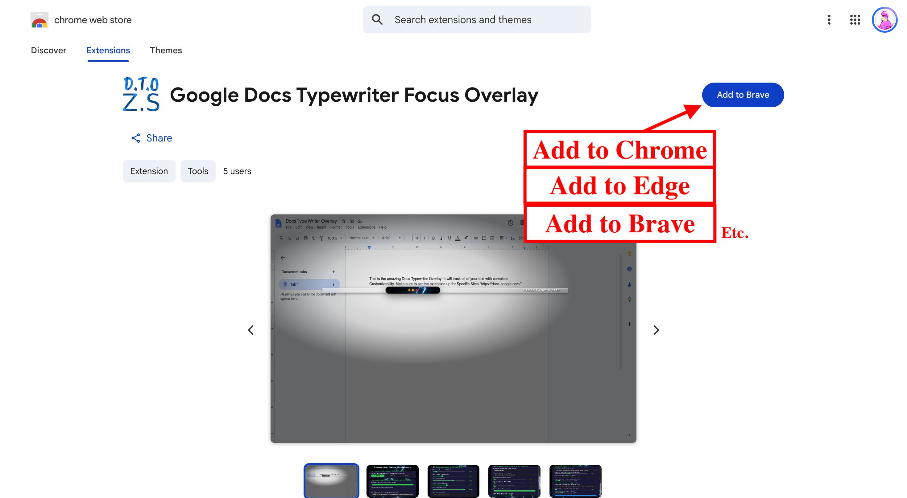
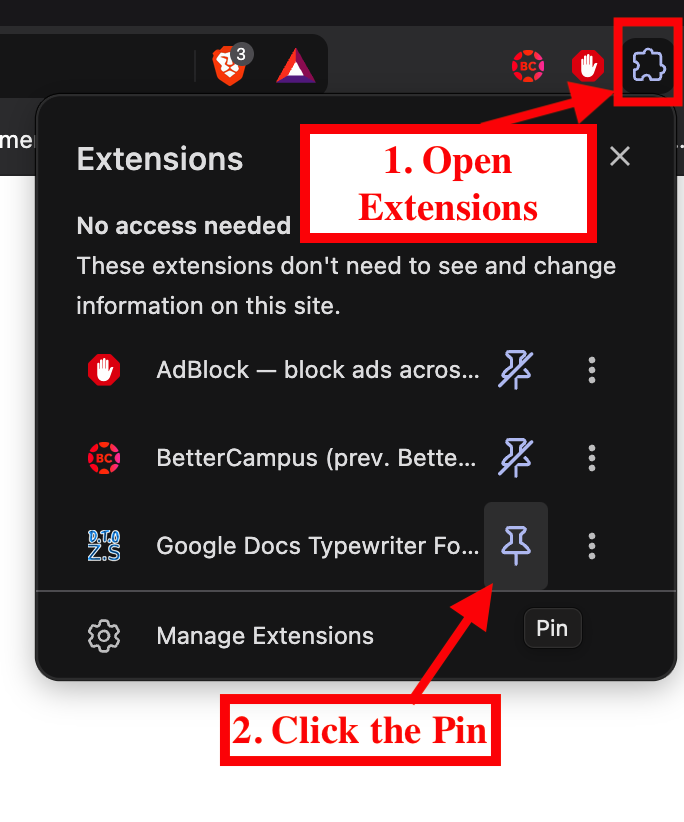
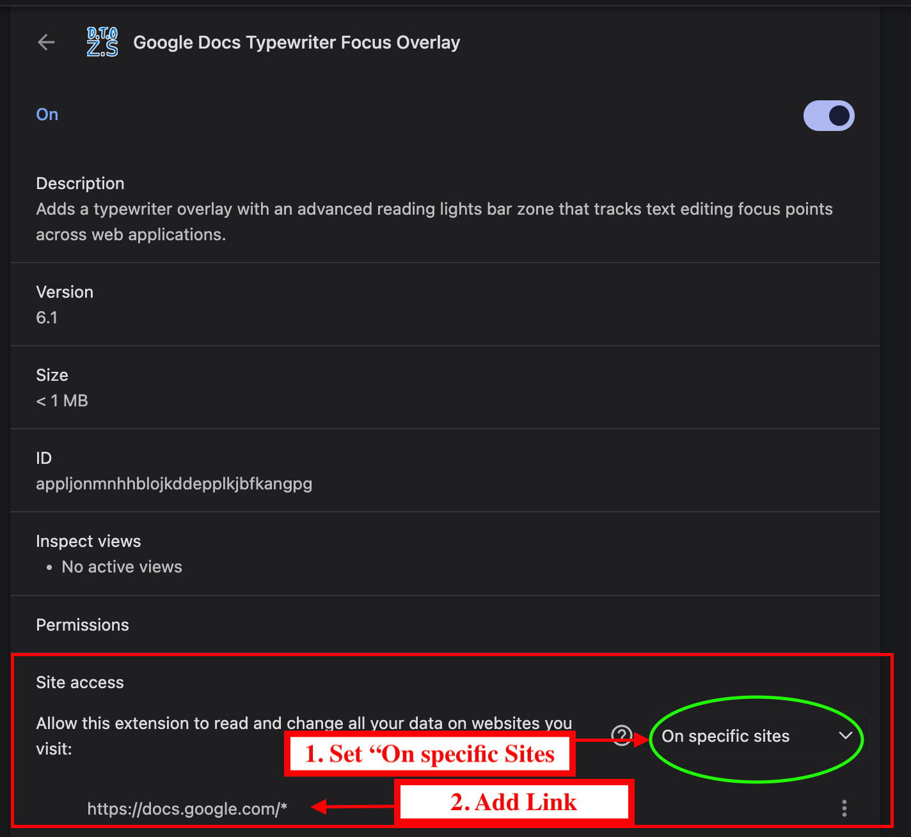

Visual Isolation
Our goal is to protect your attention by muting the surrounding interface clutter, letting you look only at the sentence you are writing.
Make it yours
See how to customize the Google Docs Typewriter Focus Overlay for a more focused, comfortable, and efficient writing experience.
Watch the walkthrough or jump to a timestamp.
Quick navigation
Select a timestamp, or use the video timeline to scrub through the recording.
Our Purpose
Our goal is to protect your attention by muting the surrounding interface clutter, letting you look only at the sentence you are writing.
We believe writing shouldn't cause fatigue. Keeping your text centered in your line of sight helps reduce physical strain over long sessions.
By blending custom aesthetics like glass mode or custom backdrop effects, we turn Google Docs into a deeply personal sanctuary for your ideas.
Get set up
Follow the images below to get started.

Click the "Add to Chrome" button on the extension page to download it to your browser in one tap.

Click the puzzle piece icon at the top right of your browser, then click the pin icon next to Typewriter Focus to keep it handy.

Open a Google Doc, click your new extension icon, and give it permission to run so it can display your custom overlay.
Get Typewriter Focus from the Chrome Web Store.
Add to ChromeGet in touch
Feel free to reach out. I'm always open to talking about Typewriter Focus or other development projects.